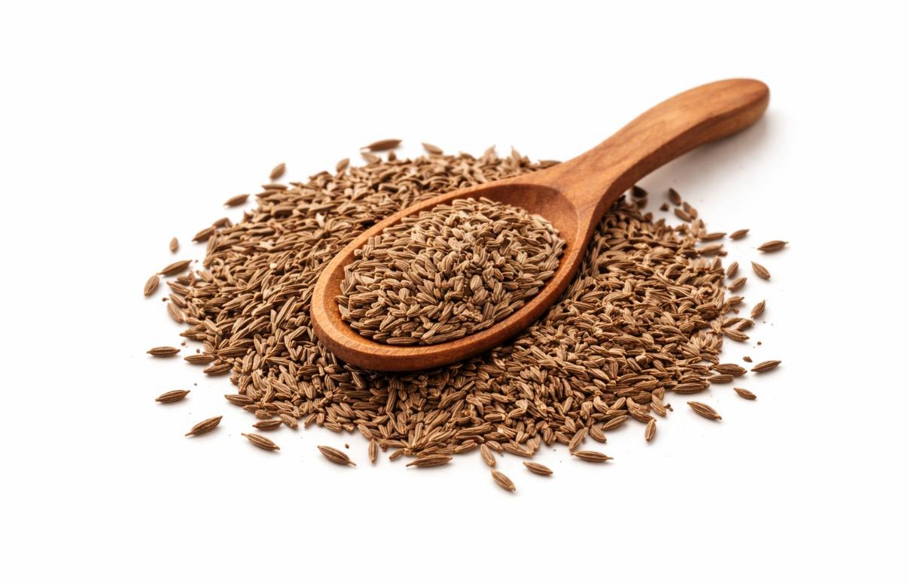
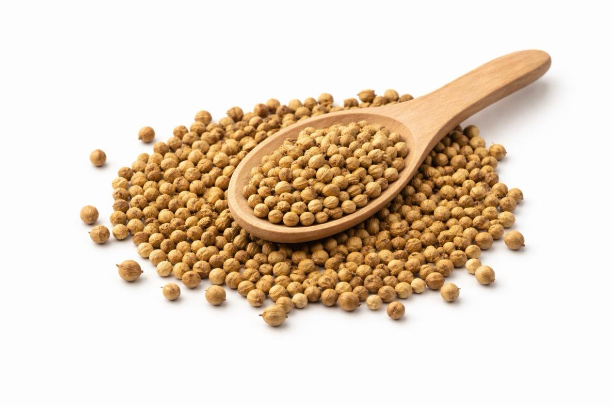
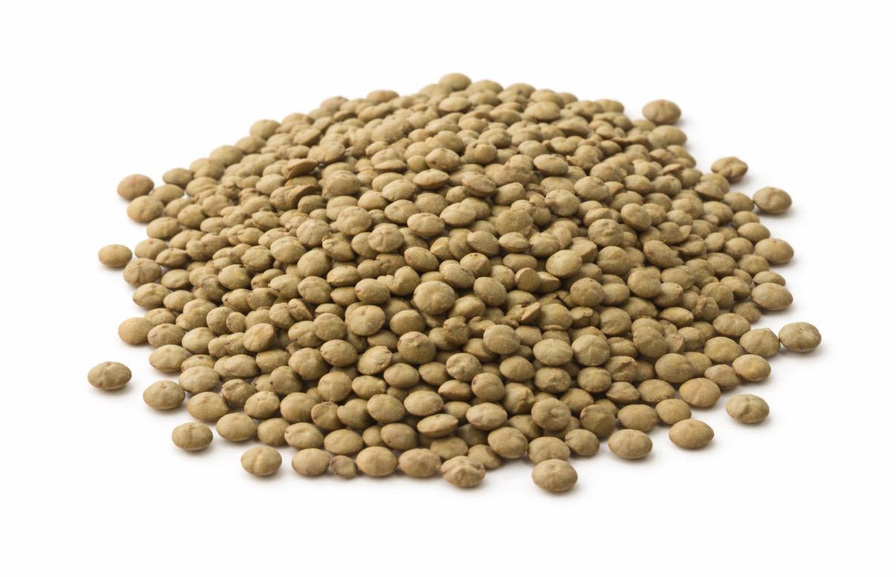
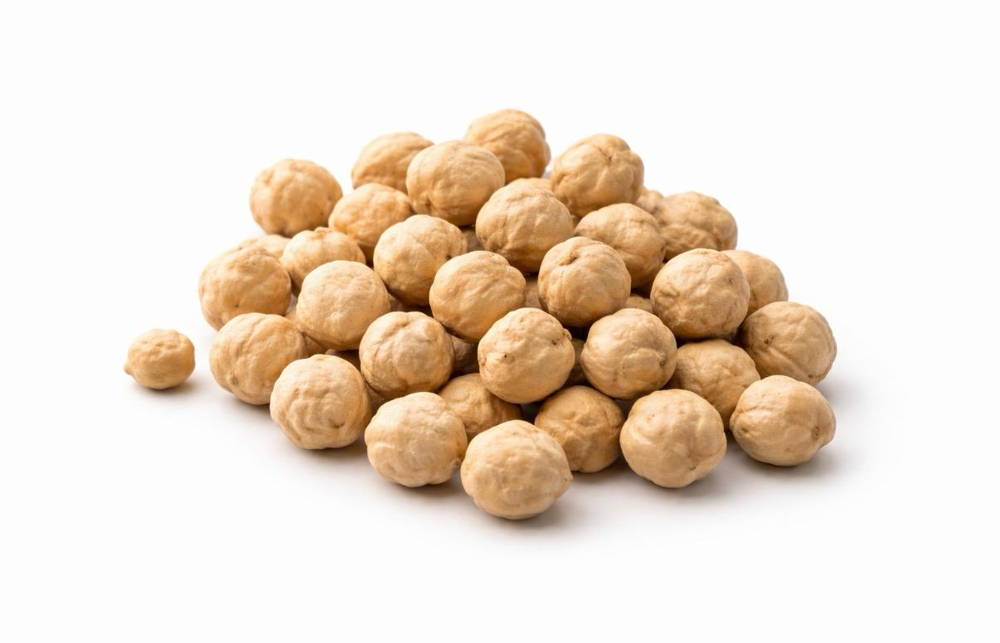
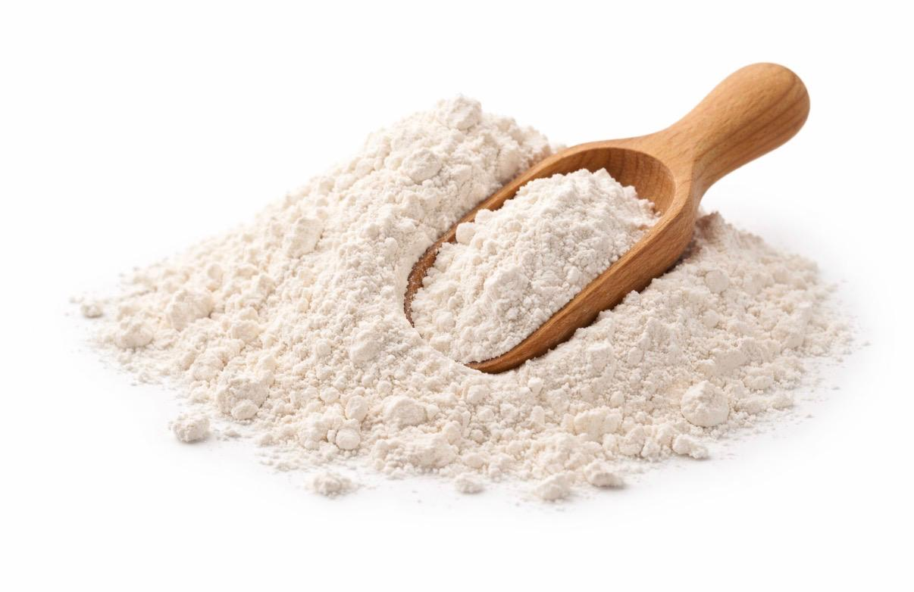

Váš partner pro sourcing a logistiku již od roku 2009
Poskytujeme komplexní řešení pro firmy, které chtějí efektivně a spolehlivě nakupovat produkty z Evropské unie i globálních trhů.
Propojujeme zákazníky s ověřenými dodavateli napříč různými odvětvími – od zemědělských komodit až po průmyslové technologie.
Díky spolupráci s námi získáte jednoho silného partnera, který zastřeší celý proces – od výběru dodavatele až po finální dodání zboží.
Hlavní výhody
jeden partner pro více kategorií produktů
ověřená síť dodavatelů v EU i globálně
flexibilní logistická řešení (LCL / FCL)
optimalizace nákladů a nákupního procesu
O nás
RAIS Logistic je společnost zaměřená na sourcing a logistiku s cílem zjednodušit nákupní proces pro importéry, distributory a průmyslové firmy.
Propojujeme sourcing, řízení dodavatelů a logistiku do jednoho efektivního řešení, které klientům šetří čas i náklady.
Působíme v rámci Evropské unie i globálních trhů a umožňujeme našim klientům přístup k širokému portfoliu produktů bez nutnosti komunikace s více dodavateli.
Spolupracujeme výhradně s ověřenými partnery, což zajišťuje stabilní kvalitu, spolehlivé dodávky a konkurenceschopné ceny.
Specializace
zemědělské a potravinářské komodity
průmyslové technologie
IT hardware a elektronika
Zajišťujeme
sourcing produktů na míru
výběr a ověření dodavatelů
logistiku a přepravu
konsolidaci zásilek, třídění a balení
dodání kontejnerů (FCL)
Naším cílem je budovat dlouhodobá partnerství založená na důvěře, spolehlivosti a efektivitě.
Zemědělské komodity
Dodáváme široké portfolio zemědělských produktů se zaměřením na velkoobjemové dodávky, stabilní kvalitu a spolehlivý sourcing.

Kmín (Caraway seeds)
Kmín je tradiční evropské koření široce využívané v potravinářství, zejména v pekařství a výrobě kořenících směsí.
Zjistit více ↓
Dodáváme kmín převážně z produkce Evropské unie (Česká republika, Polsko, Litva, Finsko), balený dle požadavků zákazníka.
Hlavní vlastnosti:
výrazná, typická vůně a chuť
vysoký obsah esenciálních olejů
vysoká čistota (čištěné a tříděné)
jednotná velikost zrn
stabilní kvalita napříč dodávkami
vhodný pro potravinářské využití (food grade)
dobrá skladovatelnost při správných podmínkách
dostupnost v různých kvalitativních třídách
Využití:
pekařská výroba (chléb, pečivo)
výroba kořenících směsí
potravinářské zpracování (masné výrobky, zelí, polévky)
gastronomický sektor (restaurace, catering)
tradiční kuchyně (středoevropská)
zpracování a balení pro retail

Koriandr
Koriandr je důležitou surovinou v potravinářství i výrobě koření.
Zjistit více ↓
Dodáváme koriandr s důrazem na kvalitu a konzistenci.
Hlavní vlastnosti:
jemná aromatická vůně s lehce citrusovým tónem
vysoký obsah esenciálních olejů
jednotná velikost a kulatý tvar semen
vysoká čistota (čištěné a tříděné)
stabilní kvalita napříč dodávkami
vhodný pro potravinářské využití (food grade)
dobrá skladovatelnost
dostupnost v různých kvalitativních třídách
Využití:
výroba kořenících směsí
potravinářské zpracování (masné výrobky, omáčky, polévky)
pekařská výroba (kořeněné pečivo)
gastronomický sektor (restaurace, catering)
mezinárodní kuchyně (asijská, indická, středomořská)
výroba marinád a dochucovadel
zpracování a balení pro retail

Čočka červená a zelená
Dodáváme kvalitní luštěniny vhodné pro potravinářství, velkoobchod i průmyslové zpracování.
Zjistit více ↓
Čočka (červená i zelená) je vysoce poptávaná díky rychlé přípravě a širokému využití.
Hlavní vlastnosti:
vysoká kvalita vhodná pro potravinářské využití (food grade)
čištěná a tříděná s minimálním obsahem nečistot
jednotná velikost a barva zrn
stabilní kvalita napříč dodávkami
dobrá skladovatelnost
vhodná pro velkoobjemové dodávky
dostupnost z EU i mimo EU
Využití:
potravinářská výroba
výroba hotových jídel
polévky, kaše a přílohy
zpracování a balení pro retail
gastronomický sektor (restaurace, catering)
velkoobchodní distribuce

Cizrna
Cizrna patří mezi nejžádanější luštěniny na globálním trhu.
Zjistit více ↓
Hlavní vlastnosti:
vysoká kvalita vhodná pro potravinářské využití (food grade)
čištěná a tříděná s minimálním obsahem nečistot
jednotná velikost (možnost kalibrovaných tříd)
vysoká nutriční hodnota (bohatá na bílkoviny a vlákninu)
stabilní kvalita napříč dodávkami
dobrá skladovatelnost
vhodná pro velkoobjemové dodávky
dostupnost z EU i mimo EU
Využití:
potravinářská výroba
výroba hummusu
výroba hotových jídel a polotovarů
polévky, saláty a přílohy
gastronomický sektor (restaurace, catering)
zpracování a balení pro retail
velkoobchodní distribuce

Pšeničná mouka
Dodáváme pšeničnou mouku v různých typech dle požadavků zákazníka a způsobu využití.
Zjistit více ↓
Hlavní vlastnosti:
vysoká kvalita vhodná pro potravinářské využití (food grade)
stabilní a konzistentní kvalita napříč dodávkami
dostupnost v různých typech dle obsahu lepku a použití
jemná struktura a dobrá zpracovatelnost
kontrolovaný obsah vlhkosti
vhodná pro velkoobjemové dodávky
dobrá skladovatelnost při správných podmínkách
dostupnost z EU i dalších regionů
Využití:
pekařská výroba (chléb, pečivo)
výroba těstovin a dalších potravin
průmyslové potravinářské zpracování
cukrářská výroba
gastronomický sektor (restaurace, catering)
zpracování a balení pro retail
velkoobchodní distribuce
Technologie
Dodáváme průmyslové a technologické produkty určené pro automatizaci, řízení výroby a moderní IT infrastrukturu.
Zaměřujeme se na řešení, která podporují efektivitu, spolehlivost a digitalizaci výrobních i technologických procesů.
Naše portfolio zahrnuje komponenty a zařízení vhodné pro náročné průmyslové prostředí, kde je klíčová stabilita, výkon a dlouhodobá spolehlivost.
Oblasti využití:
automatizace výrobních procesů
řízení a optimalizace výroby
průmyslová elektronika a embedded řešení
AI a edge computing
IT infrastruktura a datová řešení
Spolupracujeme s ověřenými výrobci a dodavateli, což nám umožňuje dodávat kvalitní a technicky spolehlivá řešení.
Zajišťujeme nejen dodávku produktů, ale i sourcing vhodných řešení dle konkrétních potřeb klienta.
Zajišťujeme kompletní logistická řešení od dodavatele až po finální destinaci.
Naše služby zahrnují:
silniční dopravu v rámci EU
námořní přepravu (LCL / FCL)
konsolidaci zásilek
koordinaci dodavatelského řetězce
Díky propojení sourcingu a logistiky zajišťujeme efektivní a nákladově optimalizované dodávky.
Vozový park a balicí technologie
Disponujeme vlastním vozovým parkem a moderním technickým zázemím, které nám umožňuje pružně reagovat na požadavky klientů a zajistit plynulý průběh logistických operací.
Vlastní vozidla využíváme pro přepravy v rámci Evropské unie, přesuny mezi sklady i řešení individuálních zakázek. Díky tomu máme plnou kontrolu nad termíny i kvalitou přepravy.
Součástí našeho zázemí je profesionální balicí technika, která umožňuje efektivní manipulaci se zbožím a jeho bezpečné zajištění během přepravy.
Zajišťujeme:
balení a přebalování zboží
paletizaci a fixaci (stretch fólie, páskování)
konsolidaci zásilek
přípravu pro export i distribuci
Díky tomu nabízíme komplexní logistické řešení s důrazem na spolehlivost, flexibilitu a efektivitu.
Proč spolupracovat s námi
Jeden partner pro více kategorií produktů
Zjednodušujeme nákupní proces – komunikujete pouze s jedním spolehlivým partnerem.
Ověřená síť dodavatelů
Spolupracujeme s prověřenými výrobci a dodavateli, což zajišťuje stabilní kvalitu a spolehlivé dodávky.
Flexibilní a individuální řešení
Sourcing i logistiku přizpůsobujeme konkrétním požadavkům klienta.
Stabilní kvalita a kontinuita dodávek
Minimalizujeme výkyvy v dodavatelském řetězci.
Efektivní logistika a optimalizace nákladů
Pomáháme snižovat náklady a zvyšovat efektivitu dodávek.
Dlouhodobá B2B spolupráce
Budujeme vztahy založené na důvěře a dlouhodobém partnerství.
Kontakt
Kontaktujte nás pro sourcing, cenovou nabídku nebo logistické řešení na míru.